Why Do We Need Transformers?
Grid · Voltage Levelsالـ Transformer بيخلّينا نـ transmit electrical power لمسافات طويلة، ونستخدم جهد الـ generator عشان ننقل high power at low current، وده بيقلل تكلفة نظام النقل، وبعدها نظبط الجهد لمستوى صالح للاستخدام.
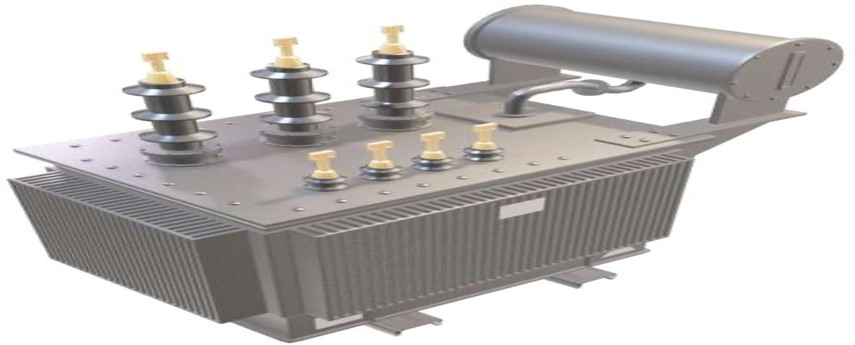
في IMG-04 الرحلة كاملة: Power Plant → Step-up Transformer → Tower → Transmission Substation → Distribution Substation → Transformers → Home.
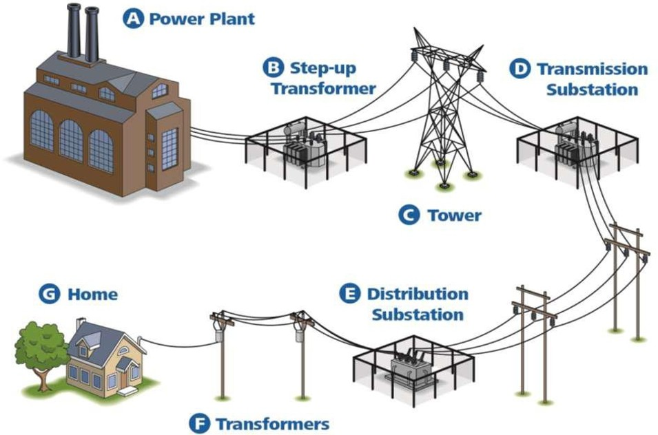
Voltage levels in the Egyptian grid
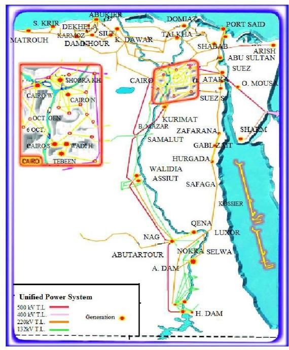
66/22 kV في المدن الجديدة: 22 kV ≈ 22 km فالمحول بيغطي حوالي 1500 km² (مساحات كبيرة).
66/11 kV في القرى القديمة: 11 kV ≈ 11 km فبيغطي حوالي 380 km² (مساحات صغيرة).
| Unit | Ratio | Voltage | Level |
|---|---|---|---|
| Gen_1 | 250 MVA | 11 : 35 kV | Generation |
| TR_1 | Δ–Y | 11 / 220 kV | Generation |
| TR_2 | Y–Y | 220 / 66 kV | Transmission |
| TR_3 | Δ–Y | 66 / 11 kV | Transmission |
| TR_4 | Δ–Y | 11 / 0.4 kV | Distribution |
Types of Transformers
Power · Instrument · Single-phaseالمحاضرة بتقسّم الـ Transformers لـ: Single phase، Three phase، وAutotransformers، وبعدين بتصنفهم حسب الوظيفة في الشبكة.
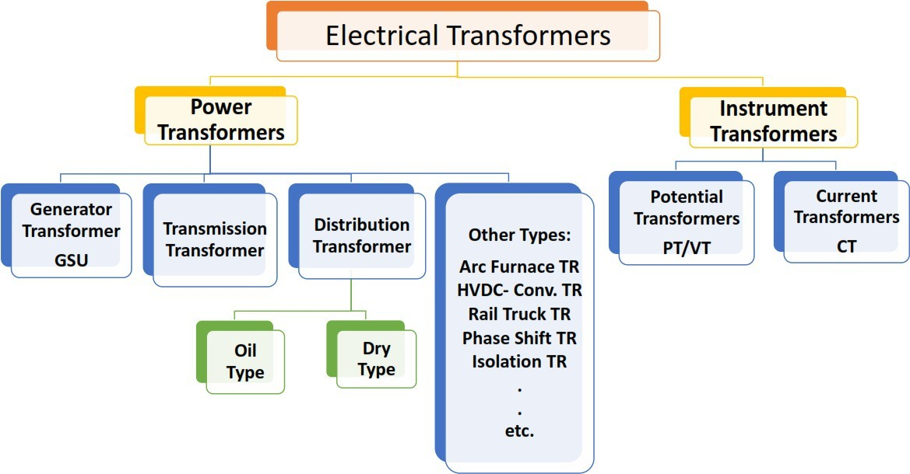
الشجرة في IMG-02 بتقسم لـ Power Transformers (Generator GSU، Transmission، Distribution بنوعيه Oil وDry، وأنواع تانية زي Arc Furnace وHVDC وRail Truck وPhase Shift وIsolation) وInstrument Transformers (PT/VT وCT).
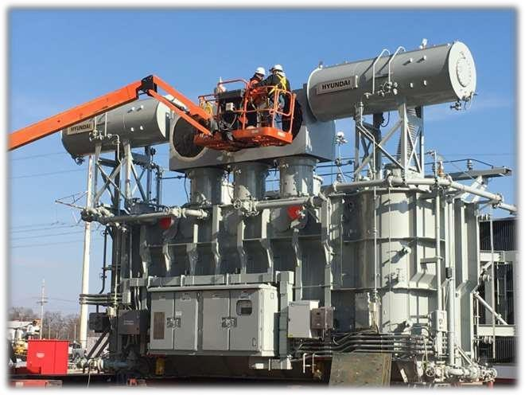
GSU هو الـ Generator Transformer اللي بيرفع جهد الـ generator قبل النقل، زي TR_1: 11/220 kV في الشبكة المصرية (IMG-04).
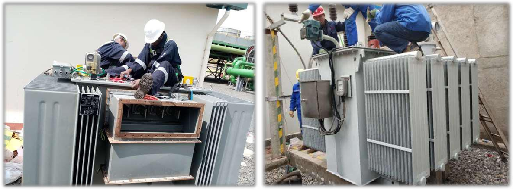
الـ Distribution Transformer من نوع Oil: الصورة بتبين المحول بالـ tank والـ radiators بتاعته على الأرض.
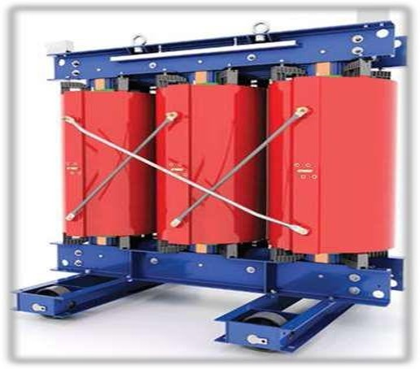
النوع التاني Dry: الـ coils ظاهرة ومفيش tank زيت، بعكس IMG-06.
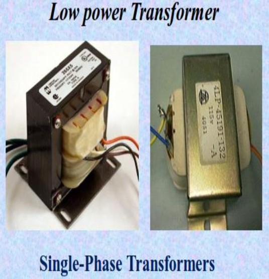
الـ Single-phase transformers بتيجي low power (محولات صغيرة بالـ enclosure)...
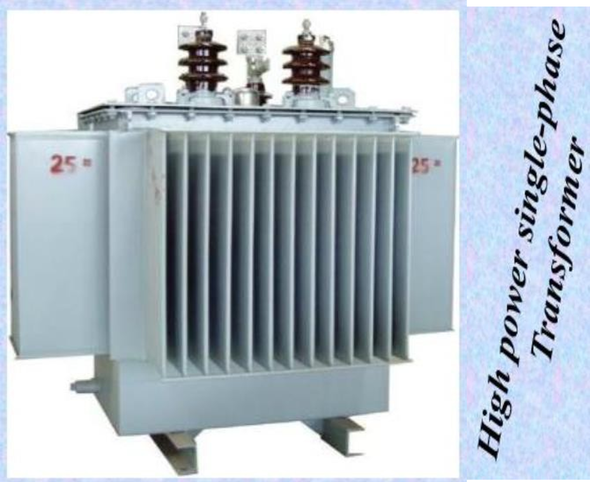
...أو high power single-phase (محول زيتي بالـ radiator fins). الاتنين بيشتغلوا بنفس المبدأ.
Construction & Components
Core · Windings · TankIMG-08 بتوضح إن الـ Transformer complex system: Coils, Core, Oil, Tank, Bushings, Tap changer, Cooling System, Control Cabinet.
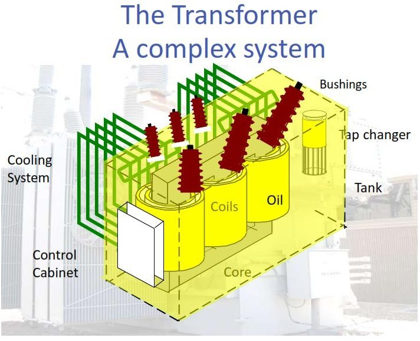
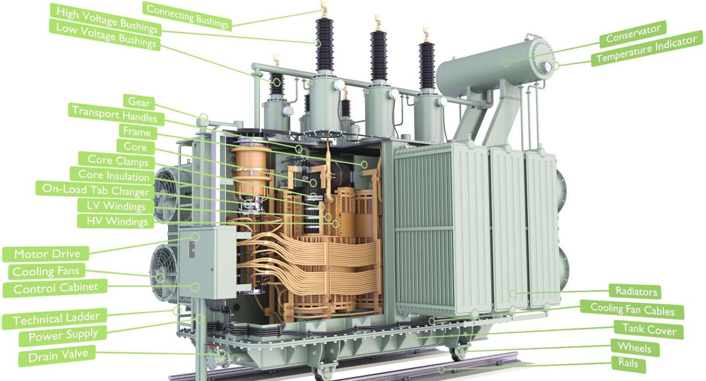
Basic components of a single-phase transformer
أربع مكونات: 1) Magnetic core، 2) Primary winding، 3) Secondary winding، 4) Enclosure.
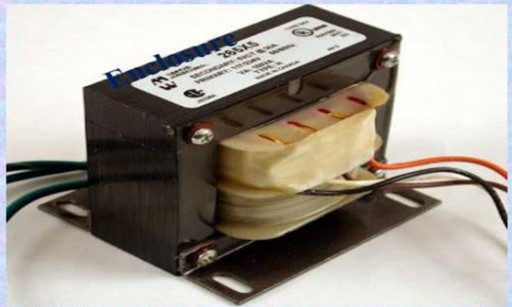
Enclosure هو المكون الرابع: الغلاف اللي بيحوي الـ core والـ windings وبتخرج منه الأطراف.
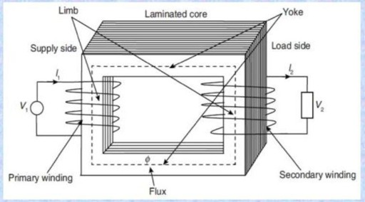
في IMG-13: المصدر V₁ على الـ primary (supply side) والحمل V₂ على الـ secondary (load side)، والـ flux φ بيلف في الـ laminated core عبر الـ limbs والـ yoke.
Core
الـ core بيدّي مسار للـ magnetic flux، وهو مش solid bar من الحديد لكن طبقات رفيعة laminated steel sheets عشان نقلل الـ heating. فيه نوعين:
Windings
ملفين نحاس معزولين كويس حوالين الـ core. الـ primary بيستقبل القدرة من المصدر، والـ AC بيولّد changing magnetic field في الـ core. الـ secondary بيتولد فيه جهد من الـ field المتغير، وحسب الـ turns ratio يبقى step-up أو step-down.
Multi-output transformer
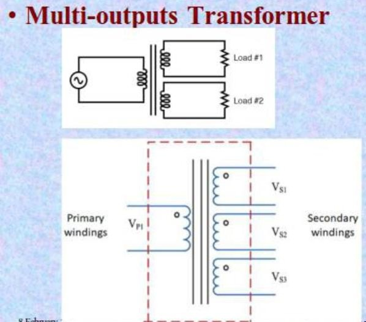
الـ primary VP1 واحد، وعدة secondaries VS1, VS2, VS3 بتغذي أحمال مختلفة (Load #1 وLoad #2).
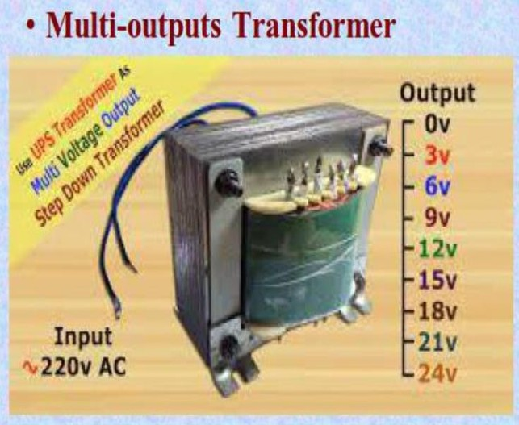
مثال عملي: دخل 220 V AC وخرج بجهود من 0 إلى 24 V (Multi Voltage Output Step Down) بخطوات 3 V.
Ideal Transformer & EMF Equation
Faraday · Flux · 4.44Derivation
نفترض إن الـ core flux جيبي:
Ratios & Transformer Rating
K · mmf balance · kVANameplate
مثال: 10 kVA, 1100/110 V يعني Rated Apparent Power = 10 kVA، Rated Primary Voltage = 1100 V، Rated Secondary Voltage = 110 V. والقدرة بالـ kVA مش kW.
Impedance Transformation
Reflected Impedanceلو عايزين نشوف حمل الـ secondary من ناحية الـ primary (Reflected Impedance): Z₂′ = V₁ / I₁، وبتعويض نسب الجهد والتيار:
From primary to secondary side
Solved Examples
Examples 2.1 – 2.7الأمثلة دي كلها تطبيق مباشر على EMF equation وturns ratio اللي اتشرحوا في الأقسام 4 و5.
Solution
Solution
The number of turns per volt (voltage per turn) on primary and secondary remains the same.
7.5 turns/VSolution
Solution
Solution
الـ gross area بتتحسب من أبعاد الـ core (الـ limbs في IMG-13)، والـ iron factor لأن الـ laminations معزولة عن بعض: